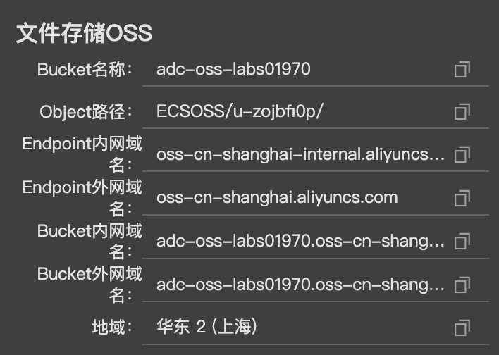
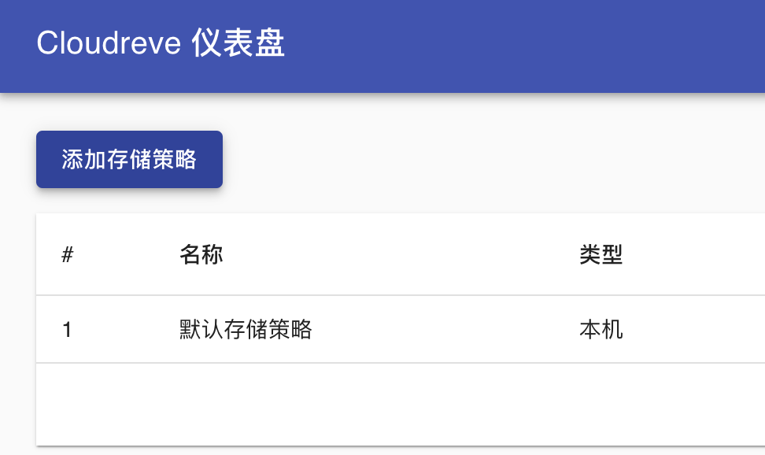

Cloudeve安装
- 执行如下命令，下载cloudreve安装包。
1 | wget https://labfileapp.oss-cn-hangzhou.aliyuncs.com/cloudreve_3.3.1_linux_amd64.tar.gz |
- 下载完毕后，执行如下命令，解压cloudreve安装包。
1 | tar -zxvf cloudreve_3.3.1_linux_amd64.tar.gz |
- 执行如下命令，给cloudreve授予权限。
1 | chmod +x ./cloudreve |
- 执行如下命令，运行cloudreve
1 | ./cloudreve |
返回结果如下所示，您可以看到管理员账号和密码。
- 打开浏览器，访问http://<公网地址>:5212，依次输入管理员账号和密码，单击登录。
ossfs安装
ossfs能让您在Linux系统中，将对象存储OSS的存储空间（Bucket）挂载到本地文件系统中，您能够像操作本地文件一样操作OSS的对象（Object），实现数据的共享。
- 执行如下命令，下载ossfs安装包。
1 | wget https://gosspublic.alicdn.com/ossfs/ossfs_1.80.6_centos8.0_x86_64.rpm |
- 下载完毕后，执行如下命令，安装ossfs。
2.1 先更换yum源（Centos8 yum 官方源下线）
1 | #1.先删除系统内过期的.repo文件 |
2.2 安装ossfs
1 | yum install -y ./ossfs_1.80.6_centos8.0_x86_64.rpm |
返回结果如下所示，表示ossfs安装成功。
- 执行如下命令，配置账号访问信息，将Bucket名称以及具有此Bucket访问权限的AccessKey ID和AccessKey Secret信息存放在/etc/passwd-ossfs文件中。您需要将BucketName、yourAccessKeyId和yourAccessKeySecret替换成Bucket名称、AccessKey ID和AccessKey Secret。
如下图所示

1 | echo BucketName:yourAccessKeyId:yourAccessKeySecret > /etc/passwd-ossfs |
- 执行如下命令，给passwd-ossfs文件授予权限。
1 | chmod 640 /etc/passwd-ossfs |
挂载OSS
- 在终端中，执行如下命令，创建一个名为oss文件夹。
1 | mkdir oss |
- 执行如下命令，将Bucket挂载到指定目录oss，您需要将BucketName、mountfolder和Endpoint替换成bucket名称、创建的oss文件夹和OSS的ECS 的经典网络访问（内网）的Endpoint。
1 | ossfs BucketName mountfolder -o url=Endpoint |
例如：ossfs adc-oss-labs01970 oss -o url=oss-cn-shanghai-internal.aliyuncs.com
参数说明：
BucketName：阿里云OSS控制台中创建的bucket名称，可在第一小节中的云产品资源下拉列表中查看。
mountfolder：上一步创建的挂载文件夹（本案例未 oss）。
Endpoint：OSS的ECS 的经典网络访问（内网）的Endpoint。
-
查看是否挂载成功
-
执行如下命令，在/etc/init.d/目录下建立文件ossfs，设置开机自动启动脚本进行OSS挂载。
1 | vim /etc/init.d/ossfs |
进入Vim编辑器后，按下i键进入编辑模式，添加以下内容，添加完成后按下Esc键退出编辑模式，最后输入:wq后按下Enter键，保存并退出Vim编辑器。
注意：
您需要将BucketName、mountfolder和Endpoint替换成bucket名称、创建的oss文件夹和OSS的ECS 的经典网络访问（内网）的Endpoint。
1 |
|
添加后的文件内容如下所示。
- 执行如下命令，为新建立的ossfs脚本赋予可执行权限。
1 | chmod a+x /etc/init.d/ossfs |
- 执行如下命令，把ossfs启动脚本作为其他服务，开机自动启动。
1 | chkconfig ossfs on |
配置个人网盘
- 执行如下命令，运行cloudreve。
1 | ./cloudreve |
-
打开浏览器，访问
http://ECS公网地址:5212，依次输入管理员账号和密码，单击登录。 -
在cloudreve主界面右上角，单击管理面板。
-
在确定站点URL设置对话框中，单击更改。
-
在左侧导航栏中，单击存储策略,再点添加存储策略,选本机存储。

-
在添加本机存储策略的上传路径页面中，将存储目录修改为oss/Object路径/{uid}/{path}，单击下一步。
Object路径
单击下一步
单击下一步


-
在添加本机存储策略的完成页面中，输入存储策略名OSS，单击完成。
-
在左侧导航栏中，单击用户组。
-
在用户组页面中，单击管理员操作中的编辑图标。
-
在编辑管理员页面的存储策略中，选择oss，然后单击保存。
-
在用户组的右上角，单击返回主页。
-
在个人网盘页面，拖拽任意文件到网页中，待文件上传完毕，关闭上传队列。
-
打开虚拟桌面的FireFox ESR浏览器打开oss控制台，在左侧导航栏中，通过Bucket列表,点击对应的Bucket名称，然后单击文件管理。
-
在文件管理页面，单击文件名为1的文件夹。
-
在1文件夹中，您可以看到在个人网盘上传的文件。
如果您喜欢此博客或发现它对您有用，则欢迎对此发表评论。 也欢迎您共享此博客，以便更多人可以参与。 如果博客中使用的图像侵犯了您的版权，请与作者联系以将其删除。 谢谢 ！